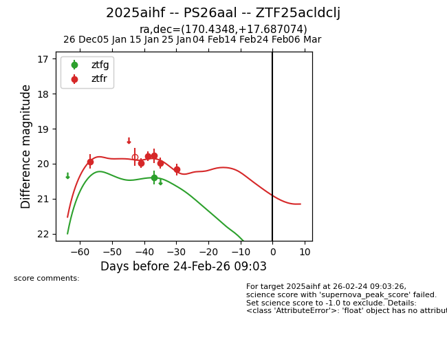
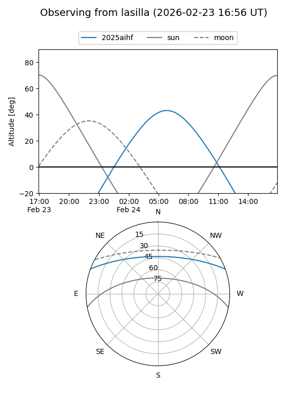
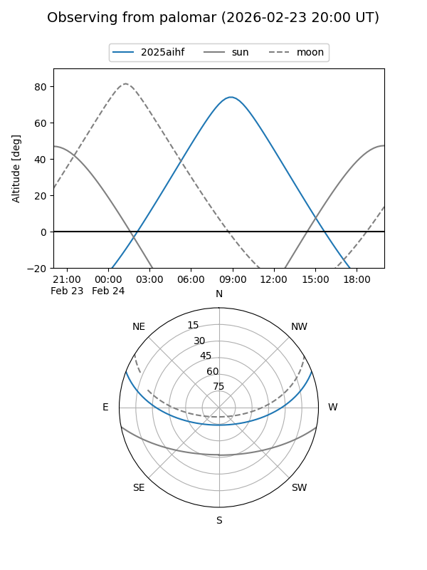

2025aihf
Target 2025aihf at 2026-01-20 13:30
Aliases and brokers:
FINK: link
Lasair: link
ALeRCE: link
TNS: link
YSE: link
alt names
ZTF25acldclj (ztf,fink_ztf)
2025aihf (tns,yse)
Coordinates:
equatorial (ra, dec) = 170.4348,+17.68707
equatorial (HMS+DMS) = 11:21:44.36,+17:41:13.46
galactic (l, b) = (232.7793,+67.27011)
Flags:
Photometry:
last ztfg=20.40, ztfr=19.77
1 ztfg, 4 ztfr detections
Lightcurve

Visibility


Additional plots